Una papelera es un objeto civilizado.
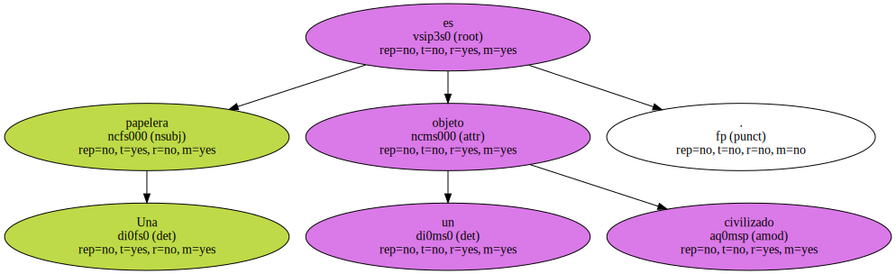Recoge nuestros detritus , nos veta la Edad Media , y nos hace sentir limpios , educados , pertenecientes al mundo hermoso al que , al parecer , no pertenecemos.
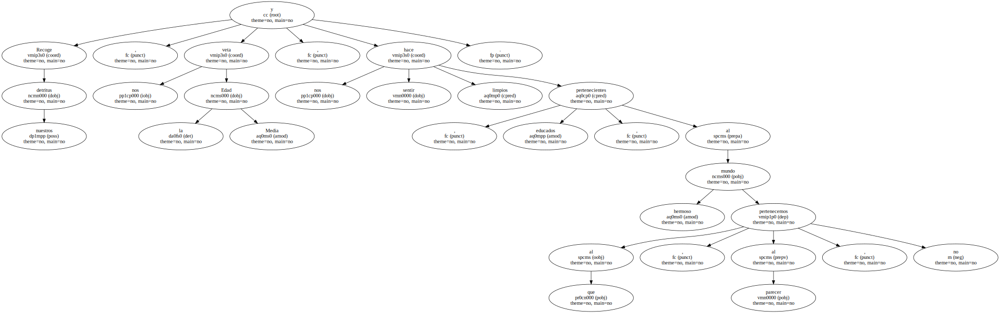Porque es moda última que mozos y pibas metidos en jarana , en tránsito de bares o de recogida , se dediquen a ir destrozando todas las papeleras que hallen sujetas en las farolas a su paso.
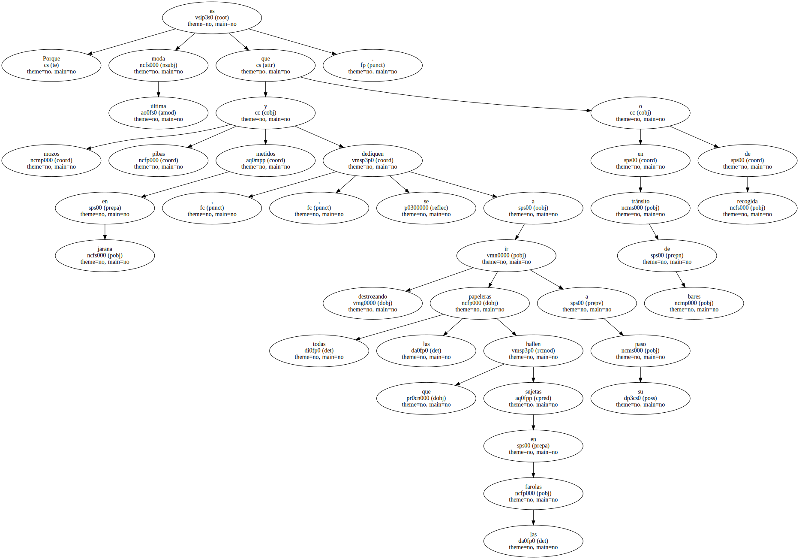Los más suaves propinan un patadón a la papelera , a la par que sueltan un aullido o berrido.
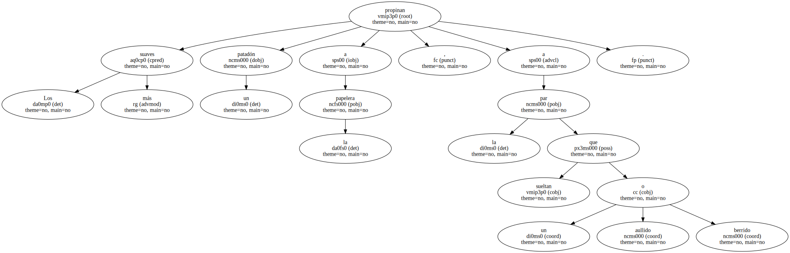Los de andadura media , cuando la papelera no se desprende con el empellón primero , continúan pataleando y chillando , hasta que cae al suelo y se derraman todas sus especias.
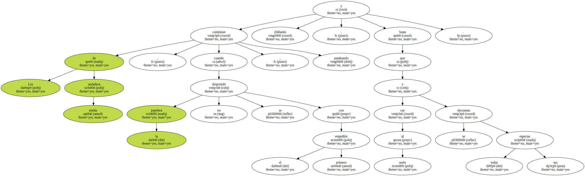Entonces se felicitan con chocar de palmas y mucho alarde de festividad , y van a por la siguiente.

Claro que aún hay una tercera opción en el derribo.
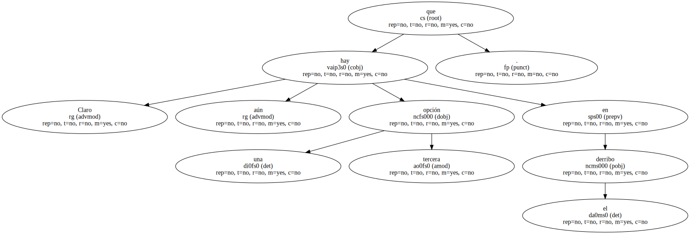Y es que - una vez efectuado - se prenda fuego al conjunto , para , al fulgor de las llamas , celebrar un rito ancestral con la mente en blanco.
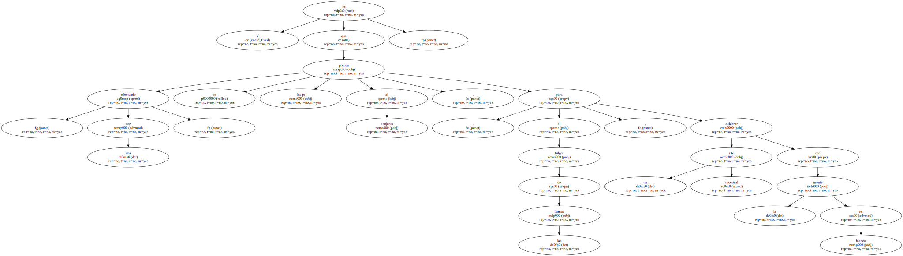¿ Qué significa tirar papeleras y quemarlas después con sus desperdicios.
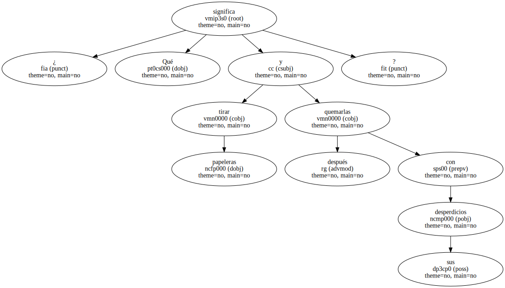El que golpea una papelera al pasar - 2.000 destruyeron en Madrid sólo el año pasado - es un insatisfecho , que siente la tentación del punching.
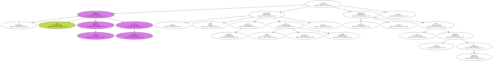El que la derriba , ha ido de la insatisfacción a la violencia.
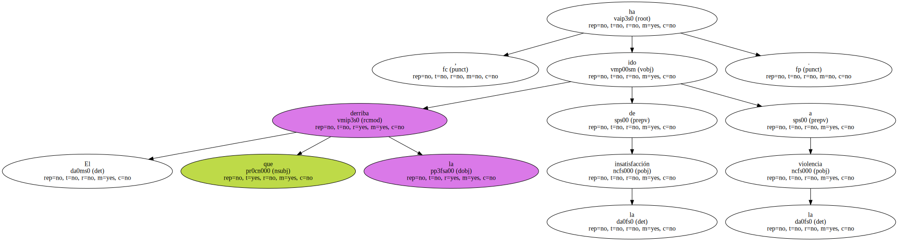El que prende el fuego caníbal , desde la violencia se ha asentado ya en la destrucción , y su ritual es una catarsis salvaje.
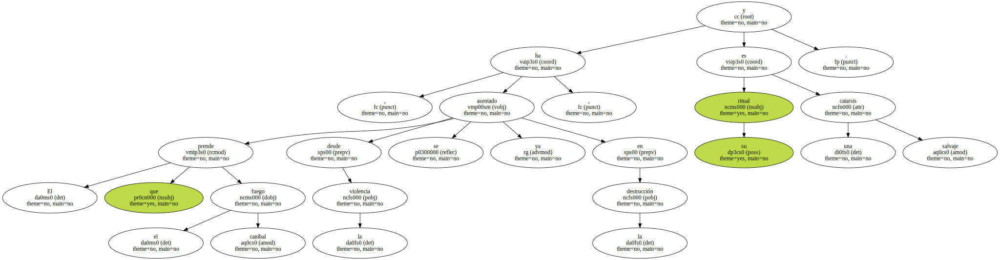